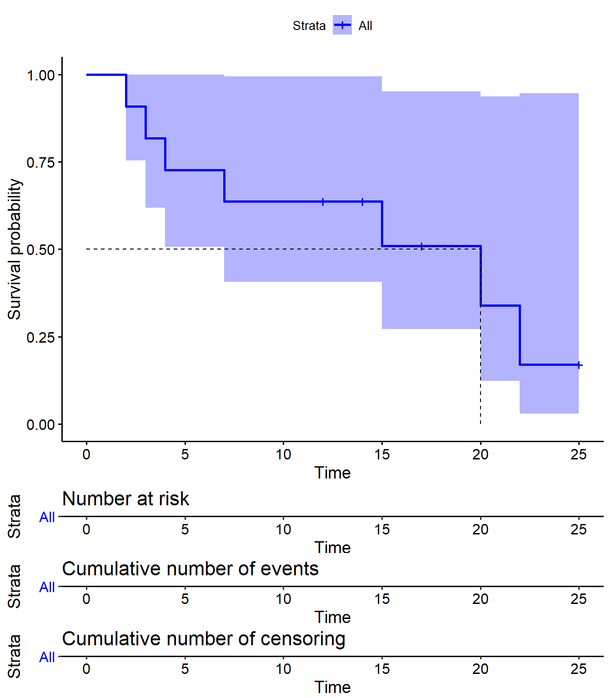
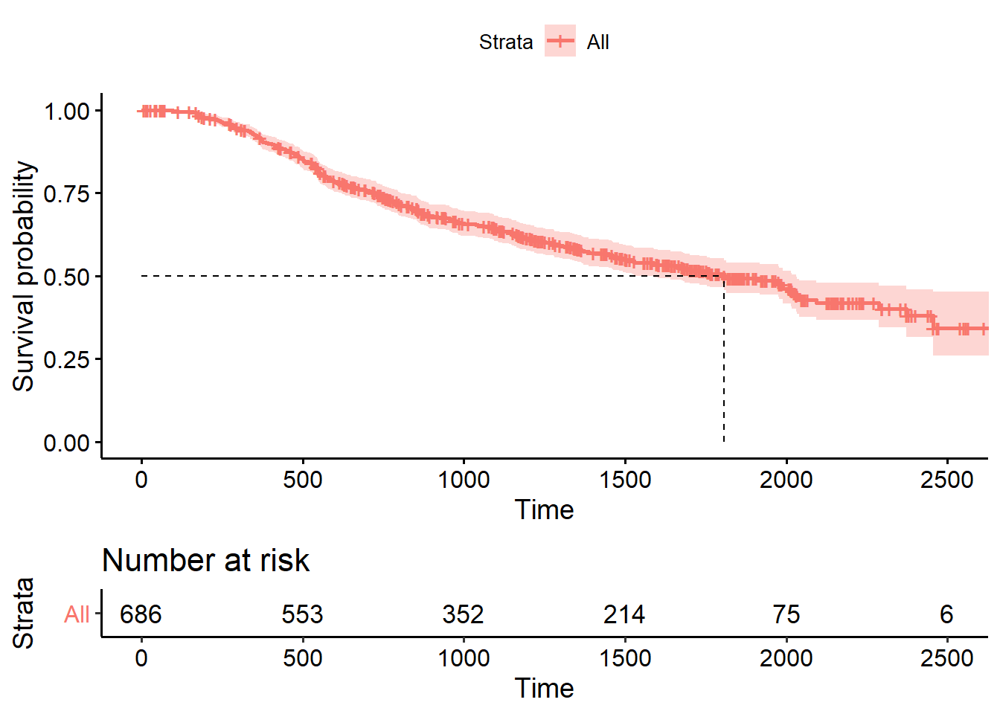
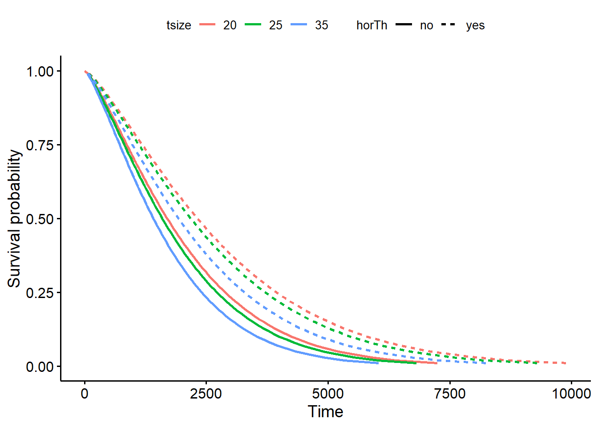
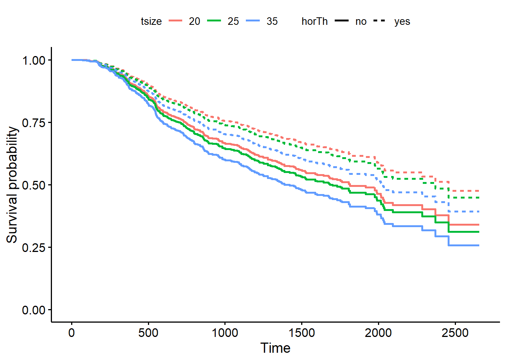

15.2 Survival Curve Estimation
There are parametric and non-parametric methods to estimate a survivor curve. The usual non-parametric method is the Kaplan-Meier (KM) estimator. The usual parametric method is the Weibull distribution, of which the exponential distribution is a special case. In between the two is the Cox proportional hazards model, the most common way to estimate a survivor curve.
15.2.1 Kaplan-Meier
The Kaplan-Meier estimator for the survival function is
\[\hat{S} = \prod_{i: t_i < t}{\frac{n_i - d_i}{n_i}}\]
where \(n_i\) is the number of persons under observation at time \(i\) and \(d_i\) is the number of individuals dying at time \(i\). The Kaplan-Meier curve falls only when a subject dies, not when a subject is censored. Confidence limits can be calculated using the “delta” method to obtain the variance of \(\log \left(\hat{S}(t) \right)\) (see p27 of Moore).
Calculate the Kaplan-Meier survival function estimate with the survfit() function. Here is an example using the lung data from the survival package to death of 228 patients witha advanced lung cancer. Column status indicates whether or not a person in the study has died (1 = censored, 2 = dead).
## inst time status age sex ph.ecog ph.karno pat.karno meal.cal wt.loss
## 1 3 306 2 74 1 1 90 100 1175 NA
## 2 3 455 2 68 1 0 90 90 1225 15
## 3 3 1010 1 56 1 0 90 90 NA 15
## 4 5 210 2 57 1 1 90 60 1150 11
## 5 1 883 2 60 1 0 100 90 NA 0
## 6 12 1022 1 74 1 1 50 80 513 0survfit() creates survival curves from a formula or from a previously fitted Cox model. The formula below is an intercept-only model. Structure the response variable as a Surv object.
## Call: survfit(formula = Surv(time, status) ~ sex, data = lung)
##
## n events median 0.95LCL 0.95UCL
## sex=1 138 112 270 212 310
## sex=2 90 53 426 348 550The printed survfit object shows there were 138 records (patients) for males (sex=1) and 90 records for females (sex=2), and 112 events (deaths) for males and 53 events for females. It also shows the 95% CI in days for the median time to event.
The survfit object contains more variables, including detailed time points with the number at risk n.risk, events n.event, and censors n.censor at each time point and strata strata.
data.frame(
strata = km_fit$strata,
time = km_fit$time,
n.risk = km_fit$n.risk,
n.event = km_fit$n.event,
n.censor = km_fit$n.censor,
surv = km_fit$surv,
upper = km_fit$upper,
lower = km_fit$lower
) %>% head()## strata time n.risk n.event n.censor surv upper lower
## 1 119 11 138 3 0 0.98 1.00 0.95
## 2 87 12 135 1 0 0.97 1.00 0.94
## 3 119 13 134 2 0 0.96 0.99 0.92
## 4 87 15 132 1 0 0.95 0.99 0.91
## 5 119 26 131 1 0 0.94 0.98 0.90
## 6 87 30 130 1 0 0.93 0.98 0.89Plot the fitted model with ggsurvplot(). A vertical drop in the curves indicates an event. The vertical tick mark on the curves means that a patient was censored.
ggsurvplot(
km_fit,
linetype = "strata", # Change line type by groups
pval = TRUE,
conf.int = TRUE,
risk.table = TRUE,
surv.median.line = "hv", # median horizontal and vertical ref lines
ggtheme = theme_bw(),
palette = c("#E7B800", "#2E9FDF"),
title = "Kaplan-Meier Survival Function Estimate"
)
Reading the figure, you can see the median survival is 270 days for sex=1 and 426 days for sex=2. These key values are available from the summary() object.
## records n.max n.start events *rmean *se(rmean) median 0.95LCL 0.95UCL
## sex=1 138 138 138 112 325 23 270 212 310
## sex=2 90 90 90 53 458 34 426 348 550ggsurvplot() can plot the cumulative risk function (aka “cumulative incidence” or “cumulative events”), \(F(t) = 1 - S(t)\), with argument fun = "event", and the cumulative hazard function, \(H(t) = -\log(S(t)).\), with argument fun = "cumhaz".
ggsurvplot(
km_fit,
fun = "event",
linetype = "strata", # Change line type by groups
pval = TRUE,
conf.int = TRUE,
ggtheme = theme_bw(),
palette = c("#E7B800", "#2E9FDF"),
title = "Kaplan-Meier Cumulative Risk Function Estimate"
)
ggsurvplot(
km_fit,
fun = "cumhaz",
linetype = "strata", # Change line type by groups
pval = TRUE,
conf.int = TRUE,
ggtheme = theme_bw(),
palette = c("#E7B800", "#2E9FDF"),
title = "Kaplan-Meier Cumulative Hazard Function Estimate"
)
ggsurvplot() can produce faceted plots for more complicated analyses. For example, fit a survival curve to the survival::colon data set with predictors sex, rx, and adhere.
km_fit_colon <- survfit(Surv(time, status) ~ sex + rx + adhere, data = colon)
p <- km_fit_colon %>%
ggsurvplot(fun = "event",
conf.int = TRUE,
ggtheme = theme_bw())
p$plot + theme(legend.position = "right") + facet_grid(rx ~ adhere)
15.2.1.1 Log-Rank Test
Compare survival curves with the log-rank test (\(H_0\): no difference). The log rank test is a non-parametric test, so it makes no assumptions about the survival distributions. The log rank test compares the observed and expected (\(H_0\)) number of events in each group. The log rank test statistic is approximately chi-square distributed.
Function survdiff() performs the log-rank test.
## Call:
## survdiff(formula = Surv(time, status) ~ sex, data = lung)
##
## N Observed Expected (O-E)^2/E (O-E)^2/V
## sex=1 138 112 91.6 4.55 10.3
## sex=2 90 53 73.4 5.68 10.3
##
## Chisq= 10.3 on 1 degrees of freedom, p= 0.001The chi-sq test statistic is 10.3 on one d.f., for a p-value of 0.001, so yes, males and females had different survival patterns.
15.2.2 Weibull
Several parametric distributions are available for modeling survival data. The exponential distribution is the easiest to use because it has a constant hazard \(h(t) = \lambda\). The cumulative hazard is \(H(t) = \int_0^t \lambda dt = \lambda t\) and the corresponding survival function is
\[S(t) = e^{-H(t)} = e^{-\lambda t}.\]
The expected survival time is \(E(T) = \int_0^\infty S(t)dt = \int_0^\infty d^{-\lambda t} dt = 1 / \lambda.\). The median survival time is \(S(t) = e^{-\lambda t} = 0.5\), or \(t_{med} = \log(2) / \lambda\).
The Weibull distribution is more appropriate for modeling lifetimes, however. The Weibull hazard function is \(h(t) = \alpha \lambda (\lambda t)^{\alpha - 1} = \alpha \lambda^\alpha t^{\alpha-1}\).
data.frame(t = rep(1:80, 3),
alpha = c(rep(1.5, 80), rep(1, 80), rep(0.75, 80)),
lambda = rep(0.03, 240)) %>%
mutate(
f = dweibull(x = t, shape = alpha, scale = 1 / 0.03),
S = pweibull(q = t, shape = alpha, scale = 1 / 0.03, lower.tail = FALSE),
h = f / S # same as alpha * lambda^alpha * t^(alpha-1)
) %>%
ggplot(aes(x = t, y = h, color = as.factor(alpha))) +
geom_line() +
theme(legend.position = "top") +
labs(y = "hazard", x = "time", color = "alpha",
title = "Weibul hazard function at varying levels of alpha",
subtitle = "Lambda = 0.03",
caption = "alpha = 1 is special case of exponential function.")
The cumulative hazard function is \(H(t) = (\lambda t)^\alpha\) and the corresponding survival function is
\[S(t) = e^{-(\lambda t)^\alpha}.\]
The exponential distribution is a special case of the Weibull where \(\alpha = 1\). The expected survival time is \(E(t) = \frac{\Gamma (1 + 1 / \alpha)}{\lambda}\). The median survival time is \(t_{med} = \frac{[\log(2)]^{1 / \alpha}}{\lambda}\)
The Kaplan-Meier estimate is used mainly as a descriptive tool. The Weibull model produces a smooth survival curve instead of a step function. The Weibull model assumes a Weibull distribution.
Fit a Weibull model with the survreg() function.
data(GBSG2, package = "TH.data")
wb <- survreg(Surv(time, cens) ~ 1, data = GBSG2)
# 90% of patients survive beyond time point 385
# Alternatively, 10% of patients die at time 385
predict(wb, type = "quantile", p = 1 - 0.9, newdata = data.frame(1))## 1
## 385# The median survival time is 1694
predict(wb, type = "quantile", p = 1 - 0.5, newdata = data.frame(1))## 1
## 1694surv <- seq(.99, .01, by = -.01)
t <- predict(wb, type = "quantile", p = 1 - surv, newdata = data.frame(1))
head(data.frame(time = t, surv = surv))## time surv
## 1 61 0.99
## 2 105 0.98
## 3 145 0.97
## 4 183 0.96
## 5 219 0.95
## 6 253 0.94surv_wb <- data.frame(time = t, surv = surv,
upper = NA, lower = NA, std.err = NA)
ggsurvplot_df(fit = surv_wb, surv.geom = geom_line)
Fit a Weibull model controlling for hormonal therapy horTh and tumor size tsize.
## (Intercept) horThyes tsize
## 7.961 0.312 -0.012##
## Call:
## survreg(formula = Surv(time, cens) ~ horTh + tsize, data = GBSG2)
## Value Std. Error z p
## (Intercept) 7.96070 0.10413 76.45 < 0.0000000000000002
## horThyes 0.31176 0.09602 3.25 0.0012
## tsize -0.01218 0.00272 -4.47 0.000007772
## Log(scale) -0.26494 0.04952 -5.35 0.000000088
##
## Scale= 0.767
##
## Weibull distribution
## Loglik(model)= -2623 Loglik(intercept only)= -2637
## Chisq= 28 on 2 degrees of freedom, p= 0.00000076
## Number of Newton-Raphson Iterations: 5
## n= 686surv <- seq(.99, .01, by = -.01)
newdata <- expand.grid(
horTh = levels(GBSG2$horTh),
tsize = quantile(GBSG2$tsize, probs = c(0.25, 0.50, 0.75))
)
t <- predict(wbmod, type = "quantile", p = 1 - surv, newdata = newdata)
surv_wbmod <- surv_wbmod_wide <- cbind(newdata, t) %>%
pivot_longer(names_to = "surv_id", values_to = "time", cols = -c(1:2)) %>%
mutate(tsize = as.numeric(tsize),
surv_id = as.factor(as.numeric(surv_id))) %>%
data.frame()
surv_wbmod$surv = surv[as.numeric(surv_wbmod$surv_id)]
surv_wbmod$upper = NA
surv_wbmod$lower = NA
surv_wbmod$std.err = NA
surv_wbmod$strata = NA
surv_wbmod[, c("upper", "lower", "std.err", "strata")] <- NA
ggsurvplot_df(surv_wbmod, surv.geom = geom_line,
linetype = "horTh", color = "tsize", legend.title = NULL)
Interpret the coefficient as the probability of surviving falls by 0.012 per unit increase in the tumor size and increases by 0.312 if taking hormonal therapy.
You can fit other models with the dist = c("lognormal", "exponential") parameter.
15.2.3 Cox
The Cox proportional hazards model uses partial likelihood to fit a regression model to censored survival data, much like linear regression. Partial likelihood differs from a likelihood in two ways. First, it is a product of expressions, one for each failure time (censoring times do not contribute any factors). Second, the factors of a partial likelihood are conditional probabilities.
Kaplan-Meier curves and logrank tests are examples of univariate analysis. They describe the survival as a function of a single categorical factor variable. The Cox proportional hazards model describes the function of multiple covariates.
The hazard function for subject \(i\) at time \(t\) is \(h_i(t) = h_0(t) \psi_i\) where \(\psi_i = e^{X_i \beta}\) and \(X\) is a set of coveriates. \(h_0(t)\) is the baseline hazard, the value when all the \(X\) covariates equal zero (\(e^{X_i \beta} = 1\)). The Cox model can be written as a multiple linear regression of the logarithm of the hazard on the variables, with the baseline hazard intercept that varies with time. The \(e^{\beta_j}\) values are called the hazard ratios. A positive \(e^{\beta_j}\) means the hazard increases with the covariate.
The Cox model is a proportional-hazards model, meaning the hazard of the event in any group is a constant multiple of the hazard in any other.
Consider the first failure time, \(t_1\). The probability that patient \(i\) is the one to fail is the proportion of patient \(i\)’s hazard divided by the sum of the hazards of all \(R_1\) patients at risk,
\[p_1 = \frac{h_i(t_1)}{\sum_{k \in R_1} h_k(t_1)} = \frac{h_0(t_1) \psi_i}{\sum_{k \in R_1} h_0(t_1) \psi_k} = \frac{\psi_i}{\sum_{k \in R_1} \psi_k}\]
The hazard ratio is time independent - the patient survivor curves are proportional to each other.
The next failure event has a reduced \(R_2\) patients at risk. The partial likelihood for \(D\) failure times is the product \(L_i = p_1 p_2 \cdots p_D\). The Cox model uses maximum partial likelihood estimation to find the value of \(\phi\) that maximizes the likelihood function.
Fit a Cox proportional hazards model with coxph(). Here is a simple Cox proportional hazards model for a single covariate, sex.
## Call:
## coxph(formula = Surv(time, status) ~ sex, data = lung)
##
## n= 228, number of events= 165
##
## coef exp(coef) se(coef) z Pr(>|z|)
## sex -0.531 0.588 0.167 -3.18 0.0015 **
## ---
## Signif. codes: 0 '***' 0.001 '**' 0.01 '*' 0.05 '.' 0.1 ' ' 1
##
## exp(coef) exp(-coef) lower .95 upper .95
## sex 0.588 1.7 0.424 0.816
##
## Concordance= 0.579 (se = 0.021 )
## Likelihood ratio test= 10.6 on 1 df, p=0.001
## Wald test = 10.1 on 1 df, p=0.001
## Score (logrank) test = 10.3 on 1 df, p=0.001The Wald statistic (z) is the ratio of each regression coefficient to its standard error (z = coef/se(coef)), just as with linear regression.
The negative coefficient estimator sign means that the hazard (risk of death) decreases with increasing values of the variable. sex is encoded as a 1 = male, 2 = female, so sex = -0.5310 means females have a lower risk of death than males.
The exponentiated coefficients (exp(coef)) are the hazard ratios, the effect-size of the covariates. Being female (sex=2) reduces the hazard by a factor of 0.5880 (41%).
Below the coefficients estimators table is a table of hazard ratio Confidence intervals.
The last section of the summary object is three tests for the overall significance of the model: the likelihood-ratio test, Wald test, and score logrank statistics. These three methods are asymptotically equivalent. The Likelihood ratio test has better behavior for small sample sizes, so it is generally preferred.
A multivariate analysis works the same way. Here is the Cox model with two additional covariates: age and ph.ecog.
## Call:
## coxph(formula = Surv(time, status) ~ age + sex + ph.ecog, data = lung)
##
## n= 227, number of events= 164
## (1 observation deleted due to missingness)
##
## coef exp(coef) se(coef) z Pr(>|z|)
## age 0.01107 1.01113 0.00927 1.19 0.23242
## sex -0.55261 0.57544 0.16774 -3.29 0.00099 ***
## ph.ecog 0.46373 1.58999 0.11358 4.08 0.000044 ***
## ---
## Signif. codes: 0 '***' 0.001 '**' 0.01 '*' 0.05 '.' 0.1 ' ' 1
##
## exp(coef) exp(-coef) lower .95 upper .95
## age 1.011 0.989 0.993 1.030
## sex 0.575 1.738 0.414 0.799
## ph.ecog 1.590 0.629 1.273 1.986
##
## Concordance= 0.637 (se = 0.025 )
## Likelihood ratio test= 30.5 on 3 df, p=0.000001
## Wald test = 29.9 on 3 df, p=0.000001
## Score (logrank) test = 30.5 on 3 df, p=0.000001The p-values for all three overall tests (likelihood, Wald, and score) are significant, indicating that the model is significant (not all \(\beta\) values are 0).
Having fit a Cox model to the data, it’s possible to visualize the predicted survival proportion at any given time for a particular risk group. Function survfit() estimates the survival proportion at the mean values of covariates by default.

To display the effects of one or more particular covariates, construct a data frame with test cases and pass to survfit() with the newdata argument.
newdata <- expand.grid(
sex = unique(lung$sex),
# age = quantile(lung$age, probs = c(0.25, 0.50, 0.75)),
age = median(lung$age),
ph.ecog = 1
)
rownames(newdata) <- c("male", "female")
# Create survival curves. The rownames show up in the model
lung_pred <- survfit(lung_cox_2, newdata = newdata, data = lung)
# surv_summary() creates the data.frame with a summary of the survfit() results, including columns like time (survival time) and surv (survival probability).
lung_pred0 <- surv_summary(lung_pred)
# get the corresponding new_data cols
lung_pred1 <- cbind(lung_pred0, newdata[as.character(lung_pred0$strata), ])
ggsurvplot_df(
lung_pred1,
color = "sex",
legend.labs = c("M", "F"),
legend.title = "Sex",
conf.int = TRUE,
ggtheme = theme_minimal())